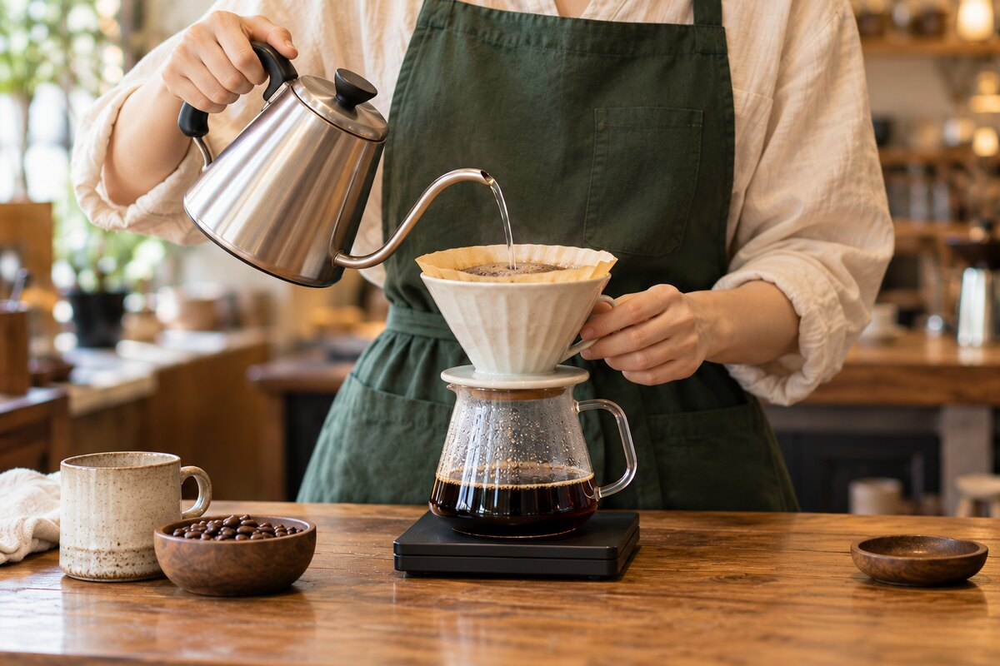
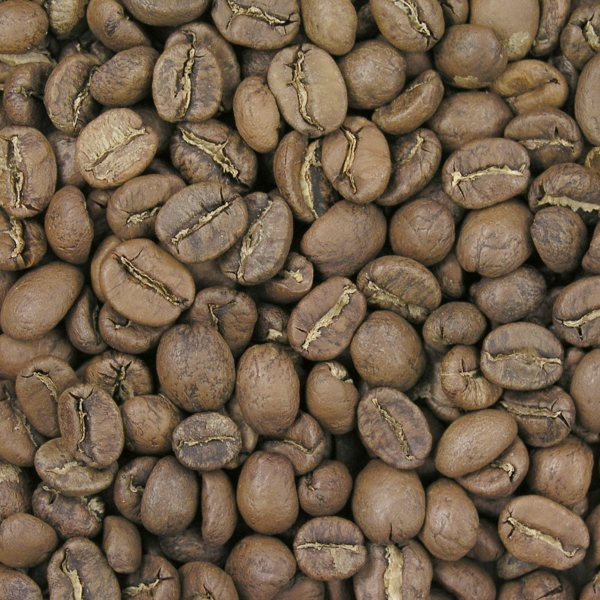
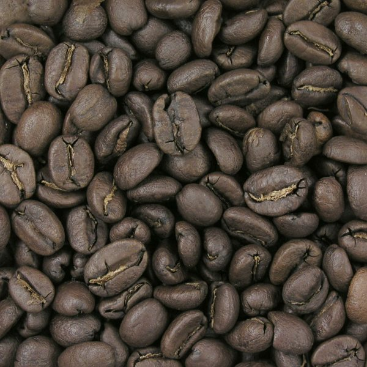
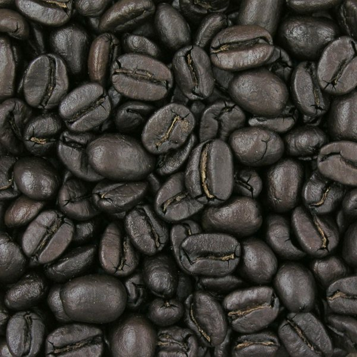

MATSUDO · SMALL ROASTERY
おすすめの豆を12段階の
焙煎で楽しむ
浅煎りの華やかさも、深煎りのコクも。
その時のおすすめの豆を、1〜12の焙煎度で。
千葉県松戸市の小さな焙煎所
Grão de café estudo -by OJI-
100gから · 一袋から全国送料無料

シングルオリジンの個性を大切に、その時々の素材と向き合う。
毎日のコーヒーに、自分だけの「好き」を。
FREE SHIPPING
OUR COFFEE
豆の銘柄は随時入れ替わるシングルオリジン
ご注文ごとに、その時の当店おすすめの豆を選んでお届けします。
焙煎豆と生豆からお選びいただけます。
焙煎豆は、お好みの焙煎度を1〜12からご指定ください。
※配送の都合上、1度のご注文は合計4袋(400g)までとなります。
12段階の焙煎指定（焙煎豆のみ）
焙煎豆をご購入の方は、Stripe決済画面の「ご希望の焙煎番号」欄に、1〜12の番号を必ずご記入ください。
SEE THE DIFFERENCE
焙煎が深まると、豆の表情も変わる。



写真は焙煎による色の違いを見るための比較イメージです。実商品ではなく、当店のNo.1〜12と一対一で対応するものではありません。焙煎の呼び名や見え方は豆・撮影条件によって異なります。
写真の出典・ライセンス
Dan Bollinger / Wikimedia Commons — Cinnamon · City · French
CC BY-SA 3.0。サイズ縮小・JPEG変換のみ。画像派生物は同じライセンスで提供しています。


| No. | 焙煎度 | 特徴 |
|---|---|---|
| 1 - 3 | 浅煎り | 華やかな酸味と豆本来のフルーティーさ |
| 4 - 6 | 中煎り | 酸味と甘みの調和。マイルドな口当たり |
| 7 - 9 | 中深煎り | 心地よい苦味と深いコク。一番人気 |
| 10 - 12 | 深煎り | 力強い苦味とスモーキーな余韻 |
Follow & Contact
最新情報やお問い合わせはこちらから